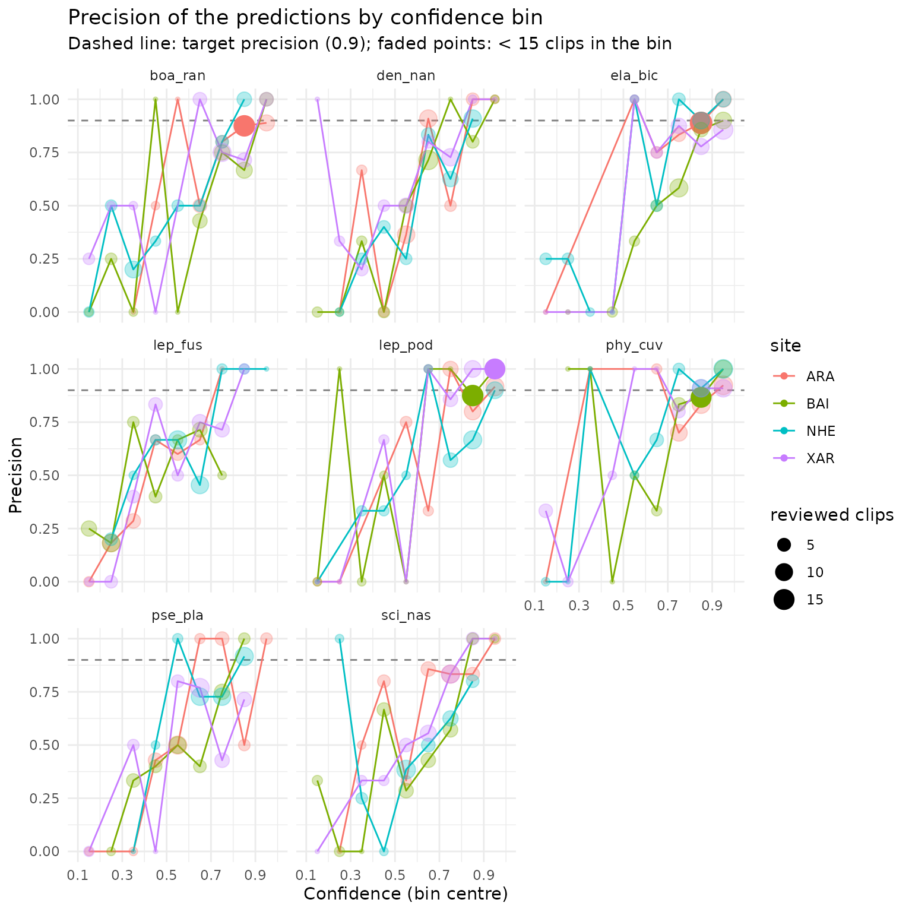

Tradução. Este artigo é uma tradução da versão em inglês, que é a referência: Get started with sheepdog. Traduzido da versão 3.2.1 do pacote; se as duas divergirem, vale a versão em inglês.
O sheepdog verifica se as detecções de um classificador personalizado (custom classifier) do ‘BirdNET’ são reais. Sua primeira etapa, tratada aqui, monta um conjunto de clipes para revisão manual a partir das tabelas de seleção (selection tables) do BirdNET e resume os vereditos dos revisores. A calibração (etapa 2) e as matrizes de comunidade (etapa 3) são tratadas em outros artigos (ver Próximos passos).
Dados de exemplo
O pacote inclui um pequeno conjunto de dados simulados: tabelas de
seleção do BirdNET (formato Raven) de vários locais gravados de outubro
de 2021 a março de 2022, com predições de um classificador personalizado
para espécies de anuros. As taxas de falsos positivos (false
positives) variam entre espécies e locais, e os scores de confiança
dos falsos positivos se sobrepõem aos das detecções verdadeiras. O
gerador é data-raw/make_example_data.R no repositório do
código-fonte. A coluna Begin Path aponta para gravações em
um drive de rede fictício (N:\pam\audio\...); os arquivos
de áudio em si não são distribuídos.
ex <- system.file("extdata", "example", package = "sheepdog")
list.files(file.path(ex, "birdnet"), recursive = TRUE)
#> [1] "ARA/BirdNET_SelectionTable.txt" "BAI/BirdNET_SelectionTable.txt"
#> [3] "NHE/BirdNET_SelectionTable.txt" "XAR/BirdNET_SelectionTable.txt"Leitura das tabelas de seleção
read_selection_tables() encontra todas as tabelas de
seleção dentro de uma pasta, lê e empilha essas tabelas. O local é
obtido do nome da pasta que contém cada tabela, e os nomes das colunas
são padronizados (por exemplo, Begin Time (s) passa a
begin_time).
det <- read_selection_tables(file.path(ex, "birdnet"))
#> 4 selection table(s) found:
#> - /home/runner/work/_temp/Library/sheepdog/extdata/example/birdnet/ARA/BirdNET_SelectionTable.txt
#> - /home/runner/work/_temp/Library/sheepdog/extdata/example/birdnet/BAI/BirdNET_SelectionTable.txt
#> - /home/runner/work/_temp/Library/sheepdog/extdata/example/birdnet/NHE/BirdNET_SelectionTable.txt
#> - /home/runner/work/_temp/Library/sheepdog/extdata/example/birdnet/XAR/BirdNET_SelectionTable.txt
#> 7553 predictions read from 4 site(s).
det |>
dplyr::select(site, species_code, confidence, begin_path, file_offset) |>
head()
#> # A tibble: 6 × 5
#> site species_code confidence begin_path file_offset
#> <chr> <chr> <dbl> <chr> <dbl>
#> 1 ARA Boana raniceps_boa-ran 0.504 "N:\\pam\\audi… 57
#> 2 ARA Dendropsophus nanus_den-nan 0.372 "N:\\pam\\audi… 66
#> 3 ARA Leptodactylus fuscus_lep-fus 0.267 "N:\\pam\\audi… 150
#> 4 ARA Pseudis platensis_pse-pla 0.873 "N:\\pam\\audi… 165
#> 5 ARA Leptodactylus podicipinus_lep-pod 0.846 "N:\\pam\\audi… 174
#> 6 ARA Leptodactylus podicipinus_lep-pod 0.479 "N:\\pam\\audi… 177
dplyr::count(det, site)
#> # A tibble: 4 × 2
#> site n
#> <chr> <int>
#> 1 ARA 1753
#> 2 BAI 1427
#> 3 NHE 2507
#> 4 XAR 1866
dplyr::count(det, species_code)
#> # A tibble: 8 × 2
#> species_code n
#> <chr> <int>
#> 1 Boana raniceps_boa-ran 874
#> 2 Dendropsophus nanus_den-nan 1366
#> 3 Elachistocleis bicolor_ela-bic 739
#> 4 Leptodactylus fuscus_lep-fus 545
#> 5 Leptodactylus podicipinus_lep-pod 699
#> 6 Physalaemus cuvieri_phy-cuv 850
#> 7 Pseudis platensis_pse-pla 1209
#> 8 Scinax nasicus_sci-nas 1271As tabelas contêm 7553 predições de 8 espécies em 4 locais (ARA, BAI, NHE, XAR).
Seleção dos clipes para revisão
select_clips() aplica o desenho amostral às predições e
retorna o manifesto de clipes (clip manifest), com uma linha
por clipe a ser cortado. A função não lê nem grava áudio. O desenho
padrão "top" mantém as n_top predições de
maior confiança por local x espécie x noite x hora;
max_per_species limita então o número de clipes por local x
espécie, distribuindo a amostra entre as horas da noite
(balance_by_hour = TRUE). Como a janela de horas abaixo
atravessa a meia-noite, as gravações feitas após a meia-noite são
atribuídas à noite anterior.
n_max <- 40
man <- select_clips(det,
sampling_mode = "top",
n_top = 2,
hour_start = 18, hour_end = 2,
max_per_species = n_max)
#> Sampling mode: top (occasion = file).
#> The hour window crosses midnight: grouping by night (small hours count as the night before).
#> Hour window 18h-2h: 7553 -> 7553 predictions.
#> 4099 clips selected (top 2 per site x species x night x hour) of 8 species.
#> Limit of 40 clips per species (per site): 4099 -> 1273 clips.
dplyr::count(man, site, species_folder) |>
tidyr::pivot_wider(names_from = site, values_from = n)
#> # A tibble: 8 × 5
#> species_folder ARA BAI NHE XAR
#> <chr> <int> <int> <int> <int>
#> 1 boa_ran 40 40 40 40
#> 2 den_nan 40 40 40 40
#> 3 ela_bic 40 40 40 40
#> 4 lep_fus 33 40 40 40
#> 5 lep_pod 40 40 40 40
#> 6 phy_cuv 40 40 40 40
#> 7 pse_pla 40 40 40 40
#> 8 sci_nas 40 40 40 40O manifesto tem 1273 clipes.
O desenho "top" serve ao retreinamento do classificador
e à calibração de score em probabilidade da etapa 2. Ele não deve ser
usado para estimar taxas de falsos positivos, porque os clipes de score
mais alto contêm menos falsos positivos que uma amostra aleatória; os
desenhos aleatórios são descritos em
vignette("sampling-designs").
O manifesto liga cada clipe à sua gravação de origem. Suas colunas
são definidas em vignette("crywolf-integration").
dplyr::glimpse(man)
#> Rows: 1,273
#> Columns: 18
#> $ site <chr> "ARA", "ARA", "ARA", "ARA", "ARA", "ARA", "ARA",…
#> $ species_code <chr> "Boana raniceps_boa-ran", "Boana raniceps_boa-ra…
#> $ species_folder <chr> "boa_ran", "boa_ran", "boa_ran", "boa_ran", "boa…
#> $ recording_date <chr> "20211016", "20220201", "20220302", "20211201", …
#> $ night <chr> "20211016", "20220201", "20220301", "20211201", …
#> $ recording_hour <chr> "19", "22", "01", "22", "01", "19", "01", "22", …
#> $ rank <int> 2, 1, 2, 1, 2, 1, 1, 2, 2, 1, 2, 1, 1, 2, 2, 1, …
#> $ confidence <dbl> 0.4693, 0.8042, 0.8667, 0.8505, 0.8473, 0.9318, …
#> $ clip_file <chr> "0.469_2_ARA01_20211016_190000_165.0s_168.0s.wav…
#> $ clip_start <dbl> 165, 114, 219, 24, 27, 246, 0, 297, 33, 6, 90, 1…
#> $ clip_end <dbl> 168, 117, 222, 27, 30, 249, 3, 300, 36, 9, 93, 2…
#> $ duration <dbl> 3, 3, 3, 3, 3, 3, 3, 3, 3, 3, 3, 3, 3, 3, 3, 3, …
#> $ source_audio <chr> "N:/pam/audio/ARA/ARA01_20211016_190000.wav", "N…
#> $ begin_path <chr> "N:\\pam\\audio\\ARA\\ARA01_20211016_190000.wav"…
#> $ sampling_mode <chr> "top", "top", "top", "top", "top", "top", "top",…
#> $ occasion_id <chr> "ARA01_20211016_190000", "ARA01_20220201_220000"…
#> $ n_detections_occasion <int> NA, NA, NA, NA, NA, NA, NA, NA, NA, NA, NA, NA, …
#> $ inclusion_prob <dbl> NA, NA, NA, NA, NA, NA, NA, NA, NA, NA, NA, NA, …As colunas usadas a seguir são species_folder (a pasta
de cada espécie na revisão), night,
confidence, clip_file (o nome do clipe, único
dentro da execução) e source_audio, com
clip_start e clip_end (o trecho de onde o
clipe é cortado).
Corte dos clipes
cut_clips() corta cada clipe do manifesto em
<output_dir>/clips/<species_folder>/, e
extract_validation_clips() executa leitura, seleção e corte
em uma única chamada, gravando clip_manifest.csv e um
arquivo zip por espécie. Ambas as funções precisam das gravações de
origem e do pacote ‘av’, por isso não são executadas aqui. Com dados
reais, verifique primeiro a seleção com simulate = TRUE e
remapeie os caminhos das gravações com remap_from e
remap_to quando o drive estiver montado em outro lugar:
extract_validation_clips("N:/pam/birdnet", "N:/pam/validation",
max_per_species = 40,
remap_from = "N:/", remap_to = "/Volumes/pam/",
simulate = TRUE)A revisão manual (simulada)
No uso real, os revisores escutam os clipes na aba Review do BirdNET
GUI (https://birdnet-team.github.io/BirdNET-Analyzer/stable/usage/gui.html),
que move cada clipe para uma subpasta Positive ou
Negative da pasta da respectiva espécie. O sheepdog lê o
veredito a partir dessa estrutura de pastas.
Para que este artigo possa ser executado, a revisão é substituída por
uma simulação: cada clipe é declarado positivo com probabilidade igual
ao seu score de confiança, e um arquivo .wav vazio com o
nome do clipe é criado na subpasta correspondente de um diretório
temporário. Esses veredito são apenas ilustrativos; eles não
correspondem à verdade simulada dos dados de exemplo e pressupõem uma
calibração perfeita, que classificadores reais não têm.
review_dir <- file.path(tempdir(), "sheepdog-review", "clips")
set.seed(1)
verdict <- ifelse(stats::runif(nrow(man)) < man$confidence,
"Positive", "Negative")
paths <- file.path(review_dir, man$species_folder, verdict, man$clip_file)
invisible(lapply(unique(dirname(paths)), dir.create,
recursive = TRUE, showWarnings = FALSE))
invisible(file.create(paths))
list.dirs(review_dir, full.names = FALSE)
#> [1] "" "boa_ran" "boa_ran/Negative" "boa_ran/Positive"
#> [5] "den_nan" "den_nan/Negative" "den_nan/Positive" "ela_bic"
#> [9] "ela_bic/Negative" "ela_bic/Positive" "lep_fus" "lep_fus/Negative"
#> [13] "lep_fus/Positive" "lep_pod" "lep_pod/Negative" "lep_pod/Positive"
#> [17] "phy_cuv" "phy_cuv/Negative" "phy_cuv/Positive" "pse_pla"
#> [21] "pse_pla/Negative" "pse_pla/Positive" "sci_nas" "sci_nas/Negative"
#> [25] "sci_nas/Positive"Resumo da revisão
classify_review() junta ao manifesto o veredito
encontrado na pasta de revisão. Clipes deixados na pasta da espécie são
marcados como "not_reviewed", e clipes que não são
encontrados em lugar algum são marcados como
"clip_missing".
val <- classify_review(man, review_dir)
#> Clips in the manifest: 1273
#> negative: 432
#> positive: 841
dplyr::count(val, species_folder, verdict)
#> # A tibble: 16 × 3
#> species_folder verdict n
#> <chr> <chr> <int>
#> 1 boa_ran negative 57
#> 2 boa_ran positive 103
#> 3 den_nan negative 66
#> 4 den_nan positive 94
#> 5 ela_bic negative 41
#> 6 ela_bic positive 119
#> 7 lep_fus negative 77
#> 8 lep_fus positive 76
#> 9 lep_pod negative 36
#> 10 lep_pod positive 124
#> 11 phy_cuv negative 32
#> 12 phy_cuv positive 128
#> 13 pse_pla negative 60
#> 14 pse_pla positive 100
#> 15 sci_nas negative 63
#> 16 sci_nas positive 97precision_by_bin() fornece a proporção de veredito
positivos por local, espécie e classe de confiança. Classes com menos de
min_n clipes revisados são marcadas em
low_support.
prec <- precision_by_bin(val, min_n = 15)
head(prec, 10)
#> # A tibble: 10 × 7
#> site species_folder bin n_reviewed n_positive precision low_support
#> <chr> <chr> <fct> <int> <int> <dbl> <lgl>
#> 1 ARA boa_ran [0.3,0.4) 1 0 0 TRUE
#> 2 ARA boa_ran [0.4,0.5) 2 1 0.5 TRUE
#> 3 ARA boa_ran [0.5,0.6) 1 1 1 TRUE
#> 4 ARA boa_ran [0.6,0.7) 6 3 0.5 TRUE
#> 5 ARA boa_ran [0.7,0.8) 5 4 0.8 TRUE
#> 6 ARA boa_ran [0.8,0.9) 16 14 0.875 FALSE
#> 7 ARA boa_ran [0.9,1] 9 8 0.889 TRUE
#> 8 ARA den_nan [0.2,0.3) 1 0 0 TRUE
#> 9 ARA den_nan [0.3,0.4) 3 2 0.667 TRUE
#> 10 ARA den_nan [0.4,0.5) 3 0 0 TRUEsuggest_thresholds() retorna, para cada local e espécie,
a menor confiança na qual a precisão entre os clipes com confiança igual
ou superior a ela atinge target_precision, com pelo menos
min_n clipes. NA indica que nenhum limiar
(threshold) atingiu a meta com os clipes revisados. Com no
máximo 40 clipes por local x espécie, muitas células não têm suporte
suficiente para atingir a meta;
vignette("validation-effort") discute quantos clipes são
necessários.
suggest_thresholds(val, target_precision = 0.90, min_n = 15)
#> # A tibble: 32 × 5
#> site species_folder threshold n_support precision_at_threshold
#> <chr> <chr> <dbl> <int> <dbl>
#> 1 ARA boa_ran NA NA NA
#> 2 ARA den_nan NA NA NA
#> 3 ARA ela_bic 0.65 36 0.917
#> 4 ARA lep_fus NA NA NA
#> 5 ARA lep_pod 0.64 30 0.9
#> 6 ARA phy_cuv 0.82 22 0.909
#> 7 ARA pse_pla NA NA NA
#> 8 ARA sci_nas NA NA NA
#> 9 BAI boa_ran NA NA NA
#> 10 BAI den_nan NA NA NA
#> # ℹ 22 more rowsnightly_presence() resume os vereditos por local,
espécie e noite: uma noite é "confirmed" quando pelo menos
um clipe é positivo.
pres <- nightly_presence(val)
head(pres)
#> # A tibble: 6 × 8
#> site species_folder night n_clips n_reviewed n_positive presence
#> <chr> <chr> <chr> <int> <int> <int> <chr>
#> 1 ARA boa_ran 20211016 1 1 1 confirmed
#> 2 ARA boa_ran 20211021 1 1 0 not_detected_in_r…
#> 3 ARA boa_ran 20211101 3 3 3 confirmed
#> 4 ARA boa_ran 20211106 1 1 1 confirmed
#> 5 ARA boa_ran 20211111 2 2 2 confirmed
#> 6 ARA boa_ran 20211116 1 1 1 confirmed
#> # ℹ 1 more variable: max_confidence_positive <dbl>
dplyr::count(pres, species_folder, presence)
#> # A tibble: 16 × 3
#> species_folder presence n
#> <chr> <chr> <int>
#> 1 boa_ran confirmed 62
#> 2 boa_ran not_detected_in_reviewed 25
#> 3 den_nan confirmed 69
#> 4 den_nan not_detected_in_reviewed 27
#> 5 ela_bic confirmed 71
#> 6 ela_bic not_detected_in_reviewed 11
#> 7 lep_fus confirmed 59
#> 8 lep_fus not_detected_in_reviewed 28
#> 9 lep_pod confirmed 61
#> 10 lep_pod not_detected_in_reviewed 12
#> 11 phy_cuv confirmed 69
#> 12 phy_cuv not_detected_in_reviewed 13
#> 13 pse_pla confirmed 72
#> 14 pse_pla not_detected_in_reviewed 19
#> 15 sci_nas confirmed 64
#> 16 sci_nas not_detected_in_reviewed 28plot_precision() desenha a curva de precisão de cada
espécie, com a precisão alvo como linha tracejada e as classes com baixo
suporte esmaecidas. A função requer o ‘ggplot2’. Com vários locais, cada
local é desenhado como uma linha de cor própria dentro dos painéis das
espécies.
plot_precision(prec, target_precision = 0.90, min_n = 15)
retraining_clips() lista os clipes positivos para o
retreinamento do classificador. Com dados reais,
post_validation() executa todos os passos acima em uma
única chamada e grava cada tabela em um arquivo CSV, junto com a
figura.
Próximos passos
-
vignette("sampling-designs"): como escolher entre os desenhos"top","random_detections"e"random_recordings", as probabilidades de inclusão que eles registram e os limites ao esforço de revisão. -
vignette("validation-effort"): quantos clipes validar, a partir da curva decalibration_effort()e do suporte de cada célula local x espécie emprecision_by_bin()esuggest_thresholds(). -
vignette("calibration"): calibração dos scores de confiança (etapa 2): os modelos candidatos, sua comparação por validação cruzada, curvas de calibração, atribuição de score a cada detecção e históricos noturnos de detecção (p_min, k). -
vignette("community-matrices"): das detecções calibradas às análises de comunidade (etapa 3):community_matrices(), a regrak_min, o filtro de esforço e ordenações com o ‘vegan’. -
vignette("retraining"): como transformar os clipes revisados em pastas de treinamento para o BirdNET-Analyzer, com um conjunto de teste independente. -
vignette("crywolf-integration"): o manifesto de clipes e as tabelas de validação como entrada para modelos de ocupação (occupancy models) com falsos positivos. -
vignette("frognet-workflow"): o fluxo de trabalho completo, tal como usado no projeto FrogNet.